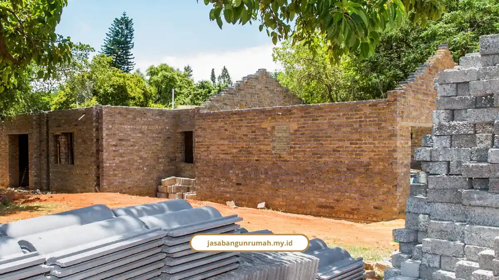

Daftar Isi
- Berapa Kisaran Biaya Bangun Rumah per Meter di Semarang 2026?
- Kenapa Biaya di Semarang Bawah dan Semarang Atas Bisa Beda Jauh?
- Bagaimana Simulasi RAB Rumah Tipe 36, 45, dan 60 di Semarang?
- Apa Saja Biaya Tambahan yang Sering Dilupakan?
- Berapa Standar Upah Tukang Harian di Semarang?
- Kenapa Sebaiknya Pakai Layanan Design & Build daripada Hitung RAB Sendiri?
- Apakah Biaya PBG Sudah Termasuk Biaya Total Bangun Rumah?
- FAQ
Banyak proyek rumah berhenti di tengah jalan bukan karena kontraktornya nakal, tapi karena RAB awalnya cuma tebak-tebakan. Biaya bangun rumah Semarang sebenarnya bisa dihitung cukup akurat kalau tahu komponen dan angka acuannya.
Di artikel ini saya bongkar semua angka itu, dari harga per meter, simulasi tipe rumah, sampai biaya tersembunyi yang sering dilupakan.
Berapa Kisaran Biaya Bangun Rumah per Meter di Semarang 2026?
Biaya borongan penuh (jasa plus material) di Semarang tahun 2026 terbagi jadi empat kelas.
| Kelas Spesifikasi | Kisaran Biaya per m² | Karakteristik |
|---|---|---|
| Sederhana/Standar | Rp3.000.000 - Rp4.500.000 | Bata merah/batako, keramik 40x40, atap baja ringan |
| Menengah/Standar Plus | Rp4.500.000 - Rp6.500.000 | Bata ringan, granit tile 60x60, kusen aluminium |
| Premium/Mewah | Rp7.000.000 - Rp15.000.000 | Material impor, marmer, smart home system |
| Borongan Jasa Saja | Rp900.000 - Rp1.600.000 | Hanya upah, material disediakan pemilik proyek |
Sebagai catatan resmi, Standar Harga Satuan Tertinggi (SHST) Pemprov Jawa Tengah menetapkan batas atas fisik rumah negara Tipe A di Semarang Rp6.610.000/m², dan bangunan gedung sederhana Rp5.760.000/m².
Kenapa Biaya di Semarang Bawah dan Semarang Atas Bisa Beda Jauh?
Kondisi geologis Semarang memang unik, dan ini yang bikin biaya pondasi bisa berbeda drastis antar wilayah.
- Semarang Bawah (Genuk, Gayamsari, Semarang Utara): tanah lunak, rawan rob, butuh bore pile (Rp145.000/m untuk diameter 30 cm sampai Rp260.000/m untuk diameter 60 cm), peninggian lantai, dan waterproofing ekstra. Biaya pondasi bisa naik 2-5 kali lipat dari kondisi standar.
- Semarang Tengah (Simpang Lima, Gajah Mungkur): tanah relatif stabil, kisaran biaya borongan Rp3.000.000-Rp4.900.000/m².
- Semarang Atas (Tembalang, Banyumanik, Candi, Gunungpati): berkontur miring, bebas rob, tapi butuh cut-and-fill dan retaining wall yang menambah biaya sekitar 15-25 persen.
Kalau lahan Anda kebetulan berkontur di Semarang Atas, saya sudah bahas solusinya lebih detail di artikel desain rumah split level yang membahas cara membangun tanpa harus meratakan lereng.
Bagaimana Simulasi RAB Rumah Tipe 36, 45, dan 60 di Semarang?

Ini simulasi kasar berdasarkan kelas spesifikasi yang paling umum dipilih klien di Semarang.
- Tipe 36: Rp108.000.000 - Rp180.000.000.
- Tipe 45: Rp135.000.000 - Rp247.500.000.
- Tipe 60 (1 lantai): Rp270.000.000 - Rp330.000.000.
- Tipe 70/120 (2 lantai): Rp280.000.000 - Rp820.000.000.
Alokasi anggarannya biasanya terbagi begini: pondasi dan struktur 15-20 persen (bisa naik ke 30-50 persen kalau tanah bermasalah), dinding dan plesteran 25-30 persen, rangka atap 10-15 persen, instalasi listrik dan plumbing 10-15 persen, finishing dan interior 20-25 persen, dan dana cadangan wajib 10-20 persen.
Apa Saja Biaya Tambahan yang Sering Dilupakan?
Di luar biaya konstruksi fisik, ada beberapa pos yang sering bikin RAB meleset kalau tidak dihitung dari awal.
- Jasa arsitek: Rp50.000-Rp100.000/m² untuk paket standar, atau Rp150.000-Rp750.000/m² untuk paket custom.
- Perizinan PBG: Rp3.000.000-Rp7.000.000, ditambah biaya DED konsultan Rp35.000-Rp75.000/m².
- Sambungan listrik baru PLN: mulai Rp467.310 untuk 450 VA sampai Rp5.763.120 untuk 5.500 VA.
- Harga tanah sebagai gambaran: Mijen/Gunungpati Rp1,5-3 juta/m², Tembalang/Ngaliyan Rp4-7 juta/m², Semarang Selatan/Tengah Rp10-30 juta/m².
Regulasi terbaru soal harga satuan bangunan di Semarang mengacu pada Perwal Semarang No. 8 Tahun 2026. Budi Prakosa, Pj. Sekretaris Daerah Kota Semarang, mengingatkan seluruh pelaksana konstruksi di Semarang untuk patuh pada standarisasi harga satuan bahan bangunan, upah, dan AHSP sesuai regulasi tersebut.
Berapa Standar Upah Tukang Harian di Semarang?
Upah harian jadi salah satu komponen terbesar dalam RAB, dan angkanya bervariasi tergantung keahlian.
- Pekerja/kuli: Rp100.000-Rp140.000/hari.
- Tukang batu/kayu/besi/cat: Rp150.000-Rp178.000/hari.
- Tukang keramik/pipa/listrik: Rp175.000-Rp185.000/hari.
- Kepala tukang dan mandor: Rp195.000-Rp228.000/hari.
Boby Rahmawan, penulis dan pengamat konstruksi Athalia Construction, menekankan pentingnya soil test sebelum menentukan RAB. Tanpa tes tanah, pemilik rumah berisiko salah hitung biaya pondasi hingga puluhan juta rupiah begitu galian menemui tanah lunak.
Kenapa Sebaiknya Pakai Layanan Design & Build daripada Hitung RAB Sendiri?
Menghitung RAB sendiri tanpa pendampingan profesional itu rawan salah, apalagi kalau belum pernah membangun rumah sebelumnya.
Alfiansyah, penulis dari Sibambo Studio, menyebutkan bahwa menyewa jasa arsitek profesional justru mencegah potensi pembengkakan biaya konstruksi fisik sebesar 20 sampai 40 persen akibat kesalahan perencanaan di lapangan.
Kami menyediakan layanan design & build terpadu sejak 2010, sudah menyelesaikan 250+ proyek dengan kepuasan klien 98 persen. RAB kami disusun rinci per item tanpa biaya tersembunyi, seperti yang dirasakan langsung oleh klien kami:
"Kami sangat terbantu dengan RAB yang transparan sejak awal, tidak ada biaya tak terduga. Pekerjaan selesai tepat waktu." - Siti Aminah, Pemilik Ruko
Kalau Anda ingin gambaran lengkap soal layanan jasa bangun rumah Semarang kami dari konsultasi sampai garansi struktur, ada pembahasan tuntasnya di artikel terpisah.
Baca Juga: Portofolio Bangun Rumah Kami di Semarang
Apakah Biaya PBG Sudah Termasuk Biaya Total Bangun Rumah?
Belum. Biaya PBG dihitung terpisah dari biaya konstruksi fisik, biasanya berkisar Rp3.000.000-Rp7.000.000 untuk rumah standar, dan wajib diurus sebelum pembangunan dimulai.
Jangan sampai lupa masukkan pos ini ke RAB awal Anda supaya tidak ada kejutan biaya di tengah proses.
Biaya bangun rumah Semarang sebenarnya bisa diprediksi cukup akurat kalau semua komponennya dihitung dari awal, bukan cuma modal kira-kira. Mulai dari harga per meter, faktor geografis lokasi, sampai biaya perizinan dan listrik, semuanya berkontribusi ke total anggaran akhir.
Kalau Anda mau RAB yang benar-benar rinci dan sesuai kondisi lahan Anda di Semarang, kami siap bantu lewat sesi konsultasi gratis. Hubungi kami via WhatsApp/Telp 0889-8964-3555.